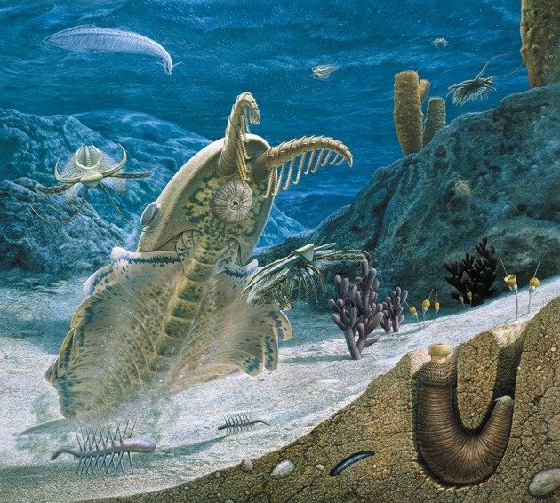

Den här websidan är inte gjord av en biolog eller en argulog. Så, ta vad jag sajer med en nipa salt.

Denna tidsperiode är när livet på jorden björa ta fart. Liv uppstod så klart tidare, men det är nu det spirder sig på rekode tid! Tvär så är fossiler väjdet salsint fårn piroden. Fuktum är att det är mer sannuliket att du dör på vagen till låten, än att ett djur fossoliseras. Men varje fossil man hittar visar hur mycket liv som har funnits på denna jord.
- Echinoderms (sjöstänor och sjöborre.)
- Molluscs (Snakor och snigelar.)
- Arthropoda (Hummer och fästingar.)
- Chordata (Dägdjure, fåglar och reptiler.)
Det finns 40 fyla idag och många vetenskapsmen tror dom mest normla familierna idag kommer från denna pariod. Men foile uppteckter i kina visar på att visa gruper har redan uppståts innan Kambrium parioden.